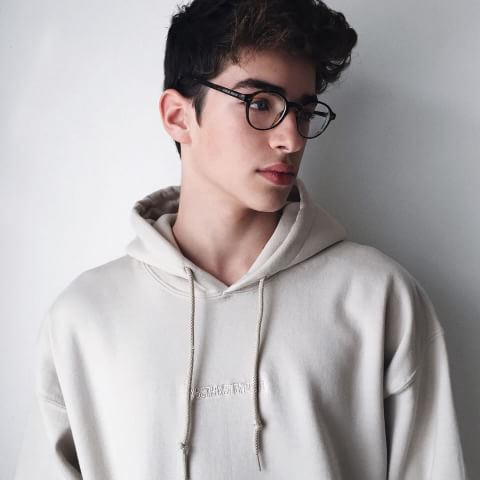
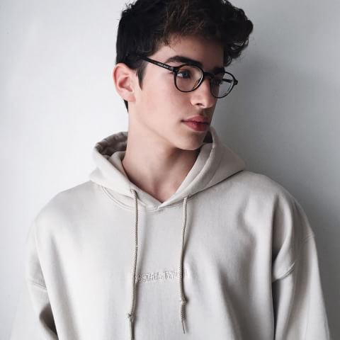

Ajeng Ayu Fatimatuz Zahra
Biodata
- Nama : Ajeng Ayu Fatimatuz Zahra
- TTL : Cianjur,23 Desember 2001
- Alamat : Perum Pondok Melati blok A4 No16 rt 04 rw 16 Cikampek barat, Karawang
- Instagram : @ajgzahr , @halloajg
Hobi
Ini hobi saya, waktu itu saya ada pelatihan basket dengan stephen curry dan saya pun diajak untuk bergabung degan club nya yaitu Golden State Warriors. Bermain basket membuat saya senang tetapi saya tetap saja tidak tumbuh keatas, makanya saya sering bermain di posisi point guard.

Karya
Ini gif yang saya buat yang bertema sama dengan hobi saya yaitu bermain basket.

Idola
Ini fotoku dengan Manurios. Nama lengkapnya itu Manuel Rios Fernandez. Dia itu sering dipanggil Manurios. Selain ganteng dia juga punya banyak bakat ,kakak ku ini mulai terkenal pada saat usia nya 9 tahun. Di umur yang masih belia ini ia mendapat panggilan dari tim Produksi acara TV di daerah Cantando en Familia. Dan selama beberapa tahun kedepan,Manu akan dilemparkan dalam beberapa acara TV yg ditayangkan secara nasional di seluruh Spanyol.
 
